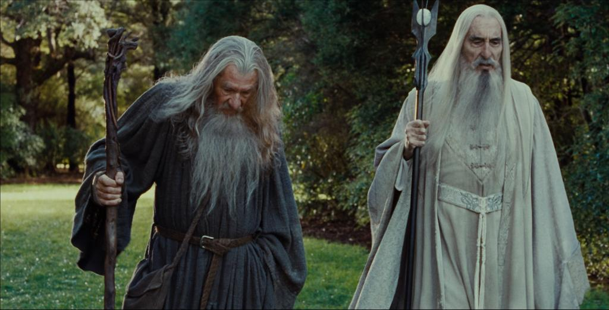

Üniversitemiz QS EECA 2021 Sıralamasında En İyi 400 Üniversite Arasında 148. Sırada Yer Aldı Haberin devamı için resme tıklayın.
Anasayfa

Elon Musk FRS, mühendis, endüstriyel tasarımcı, teknoloji girişimcisi ve hayırseverdir. Doğduğu ülke Güney Afrika dışında, Kanada ve Birleşik Devletler vatandaşıdır. Günümüzde Musk hâlen 20 yaşında göç ettiği Birleşik Devletler'de yaşamaktadır.
Gün gelir insanlar cesaretlerini yitirebilir. Dostlarına sırt çevirebilir ve tüm kardeşlik bağlarını koparabilir. Ama bugün o gün değil, kurtların vakti ve parçalanmış kalkanlar bekler insan çağının çöküşünü ama o gün bugün değil.


Jennifer Shrader Lawrence, Amerikalı oyuncu. Yer aldığı filmler dünya genelinde 5.5 milyar dolardan fazla hasılat elde etti, 2015 ve 2016 yılları arasında dünyanın en çok maaş alan kadın oyuncusuydu. 2013 yılında Time dergisinin dünyanın en etkili 100 kişisi listesinde yer aldı.
Güzelliklerle dolu, Mutlu Huzur dolu, Kazasız belasız, Bir gün dileğimle Hayırlı Sağlıklı günler